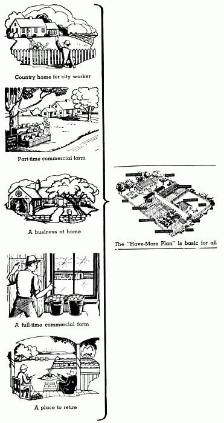

WHEN we first wrote our "Have-More" Plan we thought of it simply as a way a family could raise a good deal of its food on an acre of land. "A little land - a lot of living" was our idea. Imagine our surprise when we began getting letters such as these:
"Dear Ed and Carolyn,
"Your Plan is just what we've been looking for out here
on our 2,200 acre
cattle ranch. Why should we drive 40 miles for our groceries? We are putting in a big freezer and raising our meat, fruits, vegetables, etc. . .
"Dear Carolyn and Ed:
We think your Plan is wonderful. Of course, we aren't interested in raising our own food, but we have bought two-and -a-half acres so that our two children, Emily, 4 and Johnnie, 2 1/2, can have a nice yard to play in.
Keep up the good work. We are recommending your Plan to lots of our friends."
From many letters we saw that, in reality, our Plan is basic to five different patterns of country living:
1 Country Home for City Workers: In this set-up a family's main income comes from a "full-time" job. The land that this family can use productively is limited to what can be cared for in "spare time". However, with only an acre and an hour's spare time a day it is surprising how much of its food a family can produce, how many improvements it can make, how much repairing and maintenance it can do. In fact, with proper instruction a willing family can make an acre home in the country productive enough to pay for itself. More important than any economic considerations, however, are the wholesome aspects - a country home
gives a family a chance to work together creatively outdoors in the fresh air and sunshine. As the length of the work week shortens and city workers have more time to themselves, home ownership on an acre or so is going to become even more popular.
2) A Part-Time Commercial Farm: The distinction between a "Country Home for City Workers" and a "Part-time Commercial Farm" is a difference of degree. But because a Part-time Farm generally requires a good deal more than one to three acres of land, the distinction is important. Inasmuch as the Part-time Farmer will raise some crops for cash, the whole subject of what to raise becomes complicated by the necessity of considering a market. Generally, "part-time" is associated with hobby farming or "subsistence" farming - but thousands of part-time farmers, particularly truck gardeners, nurserymen, and even turkey raisers, farm during the growing season and work in industry during the winter and do well. The most profitable crops for the part-time or small farmer are those produced for home use.
3) A Business in the Country: Great opportunity lies in the "rural service field." Recently, the N. Y. Times said:
"The tremendous scope of the rural-service field is visualized by few. In the years ahead it is certain to include more frozen-food com munity locker plants, rural electrification. custom work with power machinery for farmers who prefer to hire instead of own repair shops for farm machinery, expanded telephone service, scientific soil conservation modern forestry and refrigeration. There be opportunities for roadside stand sale of products bought from farmers who live some distance from main roads.
"It seems evident that we are ready for a great expansion toward higher standards of country living. It does not mean more farmers. It does mean many more part-time country homes on the roads radiating from cities and large towns."
Next time you're riding through the country, notice the many signs along the road put up by people operating little businesses of their own. It's just as though a classified telephone directory had come to life. Most of these people, whether business or professional men, own a home with considerable land around it. Very often they have a garden, fruit, berries, chickens, other livestock.
4) A Full Time Commercial Farm: Farmers realize farming can be more than a business - it can be a way of life. A farmer who raises only tobacco is no more secure than the man who runs the corner cigar store. But the tobacco farmer, having gone through food rationing, is now apt to be keeping a cow, a couple of pigs, poultry and a large garden. The Department of Agriculture has found that the indigent farmer was the "one-crop" specialist operating on the theory of raising everything to sell and buying all his groceries, meat, milk, and vegetables, just as though he were a city dweller. Today, most farmers know that it is not cheaper to buy their family's food. In the corn belt, points out Rt. Rev. Ligutti, a year's supply of vegetables would cost approximately $260 for a family of five. In order for the corn belt farmer to earn $260 cash, he must spend 520 hours working 50 acres of land and produce 2,000 bushels of corn when corn sells at 50 cents a bushel. A vegetable garden only 50 x 100 feet, with $1.25 spent for seeds plus 50 hours of field work and 25 hours of canning will produce $312 worth of vegetables. Which is better off - the man who raises corn to buy vegetables - or the man who raises his own vegetables?
5) A Place to Retire: Social Security, retirement income insurance, civil service, Army, Navy and the many pension plans of industry mean millions today can look forward to a regular income in later years. The man who will put his spare time in developing a productive country home can retire years sooner. With no rent to pay, with land and the ability to make it produce the family's food, a man can live a grand style on a small pension or other steady income.
The "Have-More" Plan is basic to each of these five ways of country living. Expressed in terms of a "platform," the "Have-More" Plan calls for:
1) A source of cash income.
2) Home ownership on at least an acre of land.
3) A family willingness to use a good part of its spare-time productively and creatively.
Before you dash off to the country and buy a place, consider carefully what sort of country home you want. I think the portfolio listed below will help you make this decision.
Suggested Reading:
Buying Country Property, $1.50.
|
 |
|
|